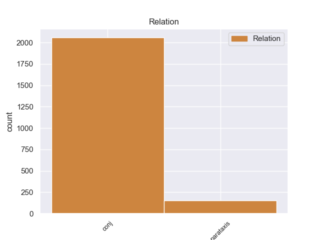
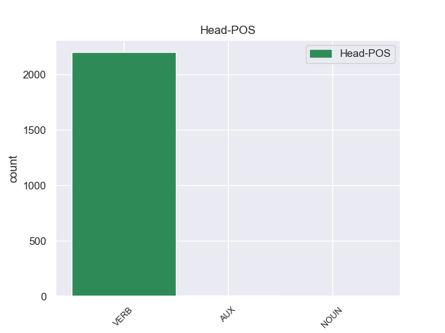
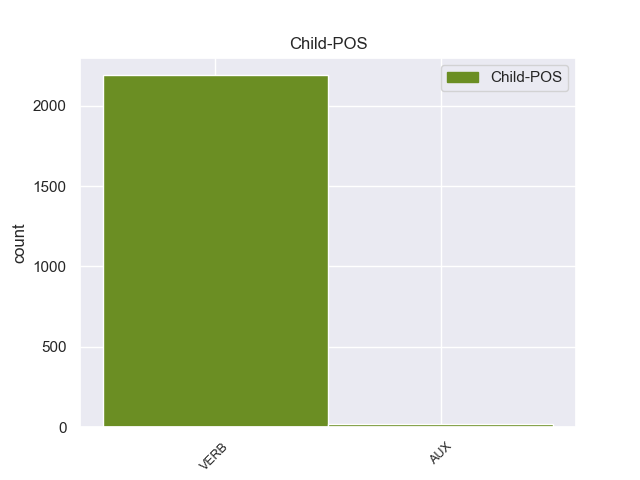

Distribution of features within this leaf



Agreement Rules sorted by frequency.
- When the dependent token is the conjunct(conj) of the head token,
1 Para _ _ _ _ 0 _ _ _
2 poder _ _ _ _ 0 _ _ _
3 estudiar _ _ _ _ 0 _ _ _
4 los _ _ _ _ 0 _ _ _
5 mejor _ _ _ _ 0 _ _ _
6 , _ _ _ _ 0 _ _ _
7 Ghazali _ _ _ _ 0 _ _ _
8 introdujo introdujar VERB _ Mood=Ind|Number=Sing|Person=3|Tense=Past|VerbForm=Fin 0 _ _ _
9 varios _ _ _ _ 0 _ _ _
10 peces _ _ _ _ 0 _ _ _
11 en _ _ _ _ 0 _ _ _
12 un _ _ _ _ 0 _ _ _
13 tanque _ _ _ _ 0 _ _ _
14 y _ _ _ _ 0 _ _ _
15 , _ _ _ _ 0 _ _ _
16 tras _ _ _ _ 0 _ _ _
17 varias _ _ _ _ 0 _ _ _
18 semanas _ _ _ _ 0 _ _ _
19 de _ _ _ _ 0 _ _ _
20 aclimatación _ _ _ _ 0 _ _ _
21 , _ _ _ _ 0 _ _ _
22 comenzó comenzar VERB _ Mood=Ind|Number=Sing|Person=3|Tense=Past|VerbForm=Fin 8 conj _ _
23 a _ _ _ _ 0 _ _ _
24 grabar _ _ _ _ 0 _ _ _
25 sus _ _ _ _ 0 _ _ _
26 sonidos _ _ _ _ 0 _ _ _
27 , _ _ _ _ 0 _ _ _
28 según _ _ _ _ 0 _ _ _
29 recoge _ _ _ _ 0 _ _ _
30 el _ _ _ _ 0 _ _ _
31 periódico _ _ _ _ 0 _ _ _
32 New _ _ _ _ 0 _ _ _
33 Zealand _ _ _ _ 0 _ _ _
34 Herald _ _ _ _ 0 _ _ _
35 . _ _ _ _ 0 _ _ _
1 En _ _ _ _ 0 _ _ _
2 total _ _ _ _ 0 _ _ _
3 pasó pasar VERB _ Mood=Ind|Number=Sing|Person=3|Tense=Past|VerbForm=Fin 0 _ _ _
4 veinte _ _ _ _ 0 _ _ _
5 años _ _ _ _ 0 _ _ _
6 dentro _ _ _ _ 0 _ _ _
7 de _ _ _ _ 0 _ _ _
8 las _ _ _ _ 0 _ _ _
9 cárceles _ _ _ _ 0 _ _ _
10 , _ _ _ _ 0 _ _ _
11 donde _ _ _ _ 0 _ _ _
12 un _ _ _ _ 0 _ _ _
13 par _ _ _ _ 0 _ _ _
14 de _ _ _ _ 0 _ _ _
15 veces _ _ _ _ 0 _ _ _
16 inició iniciar VERB _ Mood=Ind|Number=Sing|Person=3|Tense=Past|VerbForm=Fin 3 parataxis _ _
17 largas _ _ _ _ 0 _ _ _
18 huelgas _ _ _ _ 0 _ _ _
19 de _ _ _ _ 0 _ _ _
20 hambre _ _ _ _ 0 _ _ _
21 para _ _ _ _ 0 _ _ _
22 exigir _ _ _ _ 0 _ _ _
23 un _ _ _ _ 0 _ _ _
24 estatus _ _ _ _ 0 _ _ _
25 legal _ _ _ _ 0 _ _ _
26 claro _ _ _ _ 0 _ _ _
27 de _ _ _ _ 0 _ _ _
28 los _ _ _ _ 0 _ _ _
29 presos _ _ _ _ 0 _ _ _
30 políticos _ _ _ _ 0 _ _ _
31 . _ _ _ _ 0 _ _ _
Disagree Examples:
1 La _ _ _ _ 0 _ _ _
2 sonda _ _ _ _ 0 _ _ _
3 Dawn _ _ _ _ 0 _ _ _
4 sigue _ _ _ _ 0 _ _ _
5 enviando _ _ _ _ 0 _ _ _
6 datos _ _ _ _ 0 _ _ _
7 y _ _ _ _ 0 _ _ _
8 los _ _ _ _ 0 _ _ _
9 científicos _ _ _ _ 0 _ _ _
10 esperan _ _ _ _ 0 _ _ _
11 las _ _ _ _ 0 _ _ _
12 imágenes _ _ _ _ 0 _ _ _
13 que _ _ _ _ 0 _ _ _
14 envíe _ _ _ _ 0 _ _ _
15 en _ _ _ _ 0 _ _ _
16 octubre _ _ _ _ 0 _ _ _
17 , _ _ _ _ 0 _ _ _
18 cuando _ _ _ _ 0 _ _ _
19 alcance alcance VERB _ Mood=Sub|Number=Sing|Person=3|Tense=Pres|VerbForm=Fin 0 _ _ _
20 el _ _ _ _ 0 _ _ _
21 punto _ _ _ _ 0 _ _ _
22 más _ _ _ _ 0 _ _ _
23 cercano _ _ _ _ 0 _ _ _
24 a _ _ _ _ 0 _ _ _
25 el _ _ _ _ 0 _ _ _
26 asteroide _ _ _ _ 0 _ _ _
27 , _ _ _ _ 0 _ _ _
28 lo _ _ _ _ 0 _ _ _
29 que _ _ _ _ 0 _ _ _
30 permitirá permitir VERB _ Mood=Ind|Number=Sing|Person=3|Tense=Fut|VerbForm=Fin 19 parataxis _ _
31 recoger _ _ _ _ 0 _ _ _
32 fotografías _ _ _ _ 0 _ _ _
33 de _ _ _ _ 0 _ _ _
34 una _ _ _ _ 0 _ _ _
35 resolución _ _ _ _ 0 _ _ _
36 hasta _ _ _ _ 0 _ _ _
37 ocho _ _ _ _ 0 _ _ _
38 veces _ _ _ _ 0 _ _ _
39 mayor _ _ _ _ 0 _ _ _
40 . _ _ _ _ 0 _ _ _
1 Durante _ _ _ _ 0 _ _ _
2 una _ _ _ _ 0 _ _ _
3 grabación _ _ _ _ 0 _ _ _
4 , _ _ _ _ 0 _ _ _
5 el _ _ _ _ 0 _ _ _
6 paciente _ _ _ _ 0 _ _ _
7 mira mirar VERB _ Mood=Imp|Number=Sing|Person=2|VerbForm=Fin 0 _ _ _
8 un _ _ _ _ 0 _ _ _
9 estímulo _ _ _ _ 0 _ _ _
10 estándar _ _ _ _ 0 _ _ _
11 y _ _ _ _ 0 _ _ _
12 la _ _ _ _ 0 _ _ _
13 señal _ _ _ _ 0 _ _ _
14 resultante _ _ _ _ 0 _ _ _
15 se _ _ _ _ 0 _ _ _
16 interpreta interpretar VERB _ Mood=Ind|Number=Sing|Person=3|Tense=Pres|VerbForm=Fin 7 conj _ _
17 en _ _ _ _ 0 _ _ _
18 términos _ _ _ _ 0 _ _ _
19 de _ _ _ _ 0 _ _ _
20 su _ _ _ _ 0 _ _ _
21 amplitud _ _ _ _ 0 _ _ _
22 de _ _ _ _ 0 _ _ _
23 voltaje _ _ _ _ 0 _ _ _
24 su _ _ _ _ 0 _ _ _
25 duración _ _ _ _ 0 _ _ _
26 . _ _ _ _ 0 _ _ _
1 Era _ _ _ _ 0 _ _ _
2 un _ _ _ _ 0 _ _ _
3 mozo _ _ _ _ 0 _ _ _
4 gallardo _ _ _ _ 0 _ _ _
5 , _ _ _ _ 0 _ _ _
6 guapo _ _ _ _ 0 _ _ _
7 , _ _ _ _ 0 _ _ _
8 bien _ _ _ _ 0 _ _ _
9 plantado _ _ _ _ 0 _ _ _
10 , _ _ _ _ 0 _ _ _
11 que _ _ _ _ 0 _ _ _
12 llevaba llevar VERB _ Mood=Ind|Number=Sing|Person=3|Tense=Imp|VerbForm=Fin 0 _ _ _
13 una _ _ _ _ 0 _ _ _
14 vida _ _ _ _ 0 _ _ _
15 intensa _ _ _ _ 0 _ _ _
16 y _ _ _ _ 0 _ _ _
17 que _ _ _ _ 0 _ _ _
18 [ _ _ _ _ 0 _ _ _
19 tendría tener VERB _ Mood=Cnd|Number=Sing|Person=3|VerbForm=Fin 12 conj _ SpaceAfter=No
20 ] _ _ _ _ 0 _ _ _
21 muchos _ _ _ _ 0 _ _ _
22 hijos _ _ _ _ 0 _ _ _
23 . _ _ _ _ 0 _ _ _
1 Como _ _ _ _ 0 _ _ _
2 a _ _ _ _ 0 _ _ _
3 usted _ _ _ _ 0 _ _ _
4 le _ _ _ _ 0 _ _ _
5 guste gustar VERB _ Mood=Sub|Number=Sing|Person=3|Tense=Pres|VerbForm=Fin 0 _ _ _
6 comer _ _ _ _ 0 _ _ _
7 demasiado _ _ _ _ 0 _ _ _
8 , _ _ _ _ 0 _ _ _
9 haga _ _ _ _ 0 _ _ _
10 el _ _ _ _ 0 _ _ _
11 amor _ _ _ _ 0 _ _ _
12 más _ _ _ _ 0 _ _ _
13 de _ _ _ _ 0 _ _ _
14 lo _ _ _ _ 0 _ _ _
15 razonable _ _ _ _ 0 _ _ _
16 , _ _ _ _ 0 _ _ _
17 se _ _ _ _ 0 _ _ _
18 sienta _ _ _ _ 0 _ _ _
19 alguna _ _ _ _ 0 _ _ _
20 vez _ _ _ _ 0 _ _ _
21 ansioso _ _ _ _ 0 _ _ _
22 y _ _ _ _ 0 _ _ _
23 deprimido _ _ _ _ 0 _ _ _
24 o _ _ _ _ 0 _ _ _
25 simplemente _ _ _ _ 0 _ _ _
26 manifieste manifieste VERB _ Mood=Imp|Number=Sing|Person=3|VerbForm=Fin 5 conj _ _
27 algún _ _ _ _ 0 _ _ _
28 comportamiento _ _ _ _ 0 _ _ _
29 o _ _ _ _ 0 _ _ _
30 emoción _ _ _ _ 0 _ _ _
31 que _ _ _ _ 0 _ _ _
32 no _ _ _ _ 0 _ _ _
33 le _ _ _ _ 0 _ _ _
34 parezca _ _ _ _ 0 _ _ _
35 " _ _ _ _ 0 _ _ _
36 normal _ _ _ _ 0 _ _ _
37 " _ _ _ _ 0 _ _ _
38 a _ _ _ _ 0 _ _ _
39 su _ _ _ _ 0 _ _ _
40 psiquiatra _ _ _ _ 0 _ _ _
41 prepáre _ _ _ _ 0 _ _ _
42 se _ _ _ _ 0 _ _ _
43 a _ _ _ _ 0 _ _ _
44 ser _ _ _ _ 0 _ _ _
45 diagnosticado _ _ _ _ 0 _ _ _
46 como _ _ _ _ 0 _ _ _
47 " _ _ _ _ 0 _ _ _
48 enfermo _ _ _ _ 0 _ _ _
49 mental _ _ _ _ 0 _ _ _
50 " _ _ _ _ 0 _ _ _
51 y _ _ _ _ 0 _ _ _
52 ser _ _ _ _ 0 _ _ _
53 medicado _ _ _ _ 0 _ _ _
54 . _ _ _ _ 0 _ _ _
1 Ella _ _ _ _ 0 _ _ _
2 le _ _ _ _ 0 _ _ _
3 cuenta _ _ _ _ 0 _ _ _
4 a _ _ _ _ 0 _ _ _
5 Violet _ _ _ _ 0 _ _ _
6 que _ _ _ _ 0 _ _ _
7 se _ _ _ _ 0 _ _ _
8 puede _ _ _ _ 0 _ _ _
9 desterrar _ _ _ _ 0 _ _ _
10 a _ _ _ _ 0 _ _ _
11 un _ _ _ _ 0 _ _ _
12 espíritu _ _ _ _ 0 _ _ _
13 sí _ _ _ _ 0 _ _ _
14 quema quema VERB _ Mood=Imp|Number=Sing|Person=2|VerbForm=Fin 0 _ _ _
15 una _ _ _ _ 0 _ _ _
16 de _ _ _ _ 0 _ _ _
17 sus _ _ _ _ 0 _ _ _
18 posesiones _ _ _ _ 0 _ _ _
19 cercanas _ _ _ _ 0 _ _ _
20 y _ _ _ _ 0 _ _ _
21 recita recitar VERB _ Mood=Ind|Number=Sing|Person=3|Tense=Pres|VerbForm=Fin 14 conj _ _
22 la _ _ _ _ 0 _ _ _
23 palabra _ _ _ _ 0 _ _ _
24 " _ _ _ _ 0 _ _ _
25 Croatoan _ _ _ _ 0 _ _ _
26 " _ _ _ _ 0 _ _ _
27 . _ _ _ _ 0 _ _ _